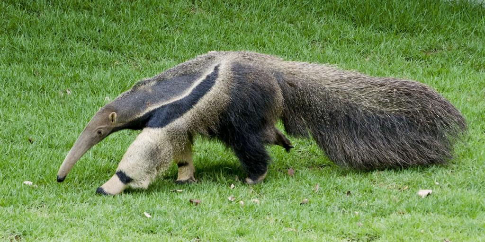

Bichos do Cerrado
-

-

-

-

-

-

-

-

-

- 
-

Anta
A anta é um mamífero herbívoro pertencente à família Tapiridae. É conhecida por seu tamanho grande e corpo robusto, com uma cabeça grande e um focinho alongado..
Suas pernas são curtas e fortes, adaptadas para suportar o peso do corpo. As antas são encontradas em habitats florestais na América do Sul e Central, onde se alimentam principalmente de folhas, frutas e brotos.
Elas desempenham um papel importante na dispersão de sementes e no equilíbrio dos ecossistemas onde habitam.
Arara-azul
A arara-azul é uma espécie de ave pertencente à família Psittacidae, conhecida por sua plumagem vibrante e colorida.
Ela é nativa das florestas tropicais da América do Sul, especialmente do Brasil. A arara-azul é reconhecida por seu tamanho impressionante e por suas asas largas, que permitem voos ágeis e poderosos.
Infelizmente, enfrenta ameaças devido à perda de habitat e ao comércio ilegal de animais.
Programas de conservação têm sido implementados para proteger essas aves magníficas e garantir sua sobrevivência no futuro.
Cachorro-do-mato
O cachorro-do-mato é um canídeo selvagem encontrado em diversas regiões da América do Sul.
Pertencente à família Canidae, é conhecido por sua aparência semelhante à dos cachorros domésticos, mas possui características adaptadas à vida selvagem, como pernas longas e uma pelagem que varia em tons de marrom e cinza.
Eles habitam principalmente áreas florestais e campos abertos, onde se alimentam de pequenos mamíferos, aves e répteis.
O cachorro-do-mato desempenha um papel importante no controle de populações de roedores e na manutenção do equilíbrio dos ecossistemas em que vive.
Coruja-buraqueira
A coruja-buraqueira é uma espécie de ave de rapina pertencente à família Strigidae.
É reconhecida por sua plumagem acinzentada com manchas brancas e por seus olhos grandes e amarelos. Ela recebe esse nome devido ao hábito de nidificar em buracos no solo, muitas vezes abandonados por outros animais.
Essas corujas são encontradas em diferentes habitats, desde campos abertos até áreas urbanas, onde se alimentam principalmente de roedores, insetos e pequenos répteis.
São consideradas úteis para o controle de pragas agrícolas e são admiradas por sua beleza e comportamento noturno.
Emu
O emu é a segunda maior ave do mundo em altura, nativa da Austrália. Pertencente à família dos ratitas, ele é conhecido por sua aparência distinta, com um pescoço longo e pernas poderosas.
Sua plumagem é geralmente marrom e densa. Os emus habitam uma variedade de ambientes, incluindo florestas, savanas e áreas semiáridas.
São aves não voadoras, mas possuem uma incrível velocidade de corrida. Sua dieta é predominantemente herbívora, alimentando-se de folhas, brotos e pequenos insetos.
Os emus desempenham um papel importante no ecossistema, ajudando a dispersar sementes e controlar a vegetação.
Gato Mourisco
O gato-mourisco, também conhecido como puma ou suçuarana, é um mamífero felino nativo das Américas. Ele tem uma aparência semelhante à dos grandes felinos, com um corpo musculoso, pelagem de cor acastanhada e uma cauda longa.
Apesar de seu tamanho impressionante, os gatos-mouriscos são solitários e discretos, preferindo se manter longe da presença humana sempre que possível. Eles habitam uma variedade de habitats, incluindo florestas, savanas e desertos.
Como carnívoros, sua dieta consiste principalmente de presas como cervos, roedores e aves.
Os gatos-mouriscos desempenham um papel crucial no controle de populações de presas e na manutenção do equilíbrio dos ecossistemas em que vivem.
Gavião-carijó
O gavião-carijó, também conhecido como asa-de-telha, é uma ave de rapina encontrada em diversas regiões da América do Sul, incluindo o Brasil.
Pertencente à família Accipitridae, é reconhecido por sua plumagem predominantemente marrom com manchas brancas na barriga e asas, além de uma listra branca sobre os olhos.
Ele é um predador ágil que caça uma variedade de presas, incluindo pequenos mamíferos, aves e répteis. Sua distribuição abrange uma variedade de habitats, desde florestas até áreas urbanas e campos abertos.
O gavião-carijó desempenha um papel importante no controle de populações de roedores e no equilíbrio dos ecossistemas onde habita.
Jacaré-do-papo-amarelo
O jacaré-do-papo-amarelo é uma espécie de réptil crocodiliano encontrada em várias regiões da América do Sul, especialmente nas áreas de pantanal e manguezais.
Ele é reconhecido por sua coloração verde-acinzentada e pelo papo amarelado presente em machos adultos. Sua dieta é composta principalmente de peixes, crustáceos, aves e pequenos mamíferos.
Os jacarés-do-papo-amarelo desempenham um papel fundamental nos ecossistemas aquáticos, controlando as populações de peixes e outros animais aquáticos.
No entanto, eles enfrentam ameaças devido à perda de habitat e à caça ilegal. Programas de conservação têm sido implementados para proteger esses répteis e garantir sua sobrevivência.
Lobo-guará
O lobo-guará é um mamífero canídeo nativo da América do Sul, especialmente encontrado no Cerrado brasileiro.
É reconhecido por sua pelagem avermelhada e longas pernas, características que o distinguem de outros lobos. É um predador oportunista, alimentando-se principalmente de roedores, aves, frutas e insetos.
Sua população tem sido afetada pela perda de habitat e pela caça ilegal, sendo classificado como uma espécie ameaçada de extinção.
Esforços de conservação têm sido feitos para proteger o lobo-guará e seu habitat natural.
Mico-leão-dourado
O mico-leão-dourado é um pequeno primata encontrado apenas na Mata Atlântica do Brasil. É reconhecido por sua pelagem dourada vibrante e uma juba ao redor da cabeça, semelhante à dos leões.
Esta espécie enfrenta sérios riscos de extinção devido à destruição do habitat, à caça ilegal e à fragmentação das populações.
Esforços de conservação têm sido implementados para proteger o mico-leão-dourado, incluindo programas de reintrodução em áreas protegidas e medidas para preservar seu habitat remanescente.
Onça-pintada
A onça-pintada é o maior felino das Américas e é encontrada em uma variedade de habitats, desde florestas tropicais até savanas e pântanos.
Reconhecida por sua pelagem amarelo-dourada com manchas pretas em forma de roseta, a onça-pintada é um predador poderoso e ágil. Ela se alimenta de uma variedade de presas, incluindo veados, capivaras e porcos-do-mato.
Apesar de sua posição no topo da cadeia alimentar, a onça-pintada enfrenta ameaças devido à perda de habitat e à caça ilegal.
Esforços de conservação são fundamentais para proteger essa espécie icônica.
Ouriço-cacheiro
O ouriço-cacheiro é um pequeno mamífero coberto por espinhos pontiagudos, encontrados em várias regiões do mundo, exceto na Austrália e na Antártida.
Eles são noturnos e se alimentam de uma dieta variada, incluindo insetos, frutas, raízes e pequenos vertebrados. Durante o dia, eles se abrigam em tocas ou em áreas densas de vegetação.
Os ouriços-cacheiros são conhecidos por seu comportamento defensivo, enrolando-se em uma bola quando se sentem ameaçados.
Eles desempenham um papel importante no controle de insetos e na dispersão de sementes.
Paca
A paca é um mamífero roedor encontrado em áreas florestais da América Central e do Sul. Reconhecida por seu corpo robusto e pelagem marrom com manchas brancas, a paca é uma presa comum para muitos predadores, incluindo jaguares e pumas.
Ela é noturna e herbívora, se alimentando principalmente de frutas, folhas e raízes.
As pacas constroem tocas ou se abrigam em buracos naturais durante o dia e são conhecidas por sua habilidade de nadar.
Elas desempenham um papel importante no ecossistema como dispersoras de sementes e parte da cadeia alimentar.
Quati
O quati é um mamífero da família dos procionídeos, encontrado em florestas tropicais da América Central e do Sul. Ele é reconhecido por seu corpo alongado, cauda anelada e focinho alongado.
Os quatis são animais sociais que vivem em grupos familiares chamados bandos. Eles são onívoros, se alimentando de frutas, insetos, pequenos vertebrados e ovos.
Os quatis são conhecidos por sua agilidade e habilidade de escalar árvores em busca de alimentos.
Eles desempenham um papel importante na dispersão de sementes e no controle de populações de insetos.
Seriema
A seriema é uma ave terrestre encontrada em diversas regiões da América do Sul, incluindo o Brasil. Pertencente à família Cariamidae, é reconhecida por sua plumagem acinzentada, pernas longas e bico forte.
As seriemas habitam uma variedade de habitats, desde áreas de savana até cerrados e campos abertos. Elas se alimentam principalmente de insetos, pequenos répteis, roedores e ocasionalmente frutas.
As seriemas são conhecidas por seus chamados altos e distintos, que podem ser ouvidos a longas distâncias.
Elas desempenham um papel importante no controle de populações de insetos e na cadeia alimentar como predadores de topo em seus ecossistemas.
Sucuri
A sucuri, também conhecida como anaconda, é uma das maiores serpentes do mundo, encontrada principalmente na América do Sul. Ela é reconhecida por seu corpo robusto, pele escura e padrão de manchas escuras ao longo do corpo.
As sucuris habitam principalmente ambientes aquáticos, como rios, lagos e pântanos.
São predadores ágeis e poderosos, alimentando-se de uma variedade de presas, incluindo peixes, aves, mamíferos e até mesmo jacarés.
Apesar de sua reputação intimidante, as sucuris geralmente evitam o contato com humanos e raramente representam uma ameaça para as pessoas.
Tamanduá-bandeira
O tamanduá-bandeira é um mamífero da família dos mirmecofagídeos, encontrado principalmente na América do Sul, especialmente no Brasil.
Ele é reconhecido por sua aparência distintiva, com um corpo grande, pelagem cinza com manchas brancas e uma longa língua pegajosa adaptada para capturar formigas e cupins.
Os tamanduás-bandeira são principalmente insetívoros, alimentando-se de grandes quantidades de insetos encontrados em cupinzeiros e formigueiros. Eles também se alimentam ocasionalmente de frutas e outros pequenos animais.
São animais solitários e noturnos, passando a maior parte do tempo procurando por comida. Infelizmente, o tamanduá-bandeira enfrenta ameaças devido à perda de habitat e à caça ilegal, e é classificado como uma espécie vulnerável.
Tatu-canastra
O tatu-canastra, também conhecido como tatu-bola ou papa-formigas-gigante, é o maior tatu do mundo, encontrado principalmente na América do Sul, especialmente no Brasil.
Ele é reconhecido por seu corpo grande e arredondado, coberto por uma carapaça resistente. Os tatus-canastra são animais escavadores e se alimentam principalmente de insetos, especialmente formigas e cupins, que capturam com suas garras poderosas.
Eles também consomem frutas, raízes e outros materiais vegetais. Os tatus-canastra desempenham um papel importante na manutenção do equilíbrio ecológico, controlando as populações de insetos e ajudando na dispersão de sementes
No entanto, eles enfrentam ameaças devido à perda de habitat e à caça, e estão em declínio em muitas áreas devido à pressão humana.
Tucano-toco
O tucano-toco é uma espécie de ave da família Ramphastidae, encontrada em diversas regiões da América do Sul, especialmente na Amazônia brasileira. Ele é reconhecido por seu grande bico colorido e plumagem vibrante.
O tucano-toco se alimenta principalmente de frutas, embora também consuma insetos, ovos e pequenos vertebrados.
Ele desempenha um papel importante na dispersão de sementes de árvores frutíferas e na manutenção da biodiversidade nas florestas tropicais. No entanto, enfrenta ameaças devido à perda de habitat e à captura para o comércio ilegal de animais de estimação.
Veado-campeiro
O veado-campeiro, também conhecido como veado-mateiro, é uma espécie de cervídeo encontrado em várias regiões da América do Sul, incluindo o Brasil. Ele é reconhecido por sua pelagem acinzentada ou marrom e pelos chifres ramificados nos machos.
O veado-campeiro habita uma variedade de habitats, desde florestas até áreas de cerrado e campos abertos. Ele se alimenta principalmente de folhas, brotos, frutos e grama.
O veado-campeiro desempenha um papel importante na cadeia alimentar como presa para predadores como onças e pumas, e também ajuda a controlar o crescimento da vegetação por meio do pastejo.
No entanto, enfrenta ameaças devido à caça ilegal e à perda de habitat.